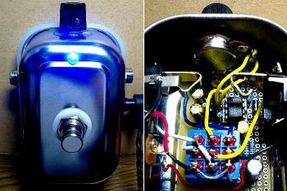

MXR micro amp+ その1
2009年03月24日 カテゴリー：
自作エフェクター（アナログ）

思いつきで作ったMXR micro ampです。ちょっと回路をいじっていますが、まぁ公開するまでもないです。単に音量を上げるというブースターなんですが、1つ持っておくと便利そうです。ケースは100円ショップのものですが意外と丈夫みたいです。
※知り合いにプレゼントしたので現在は手元にありません。